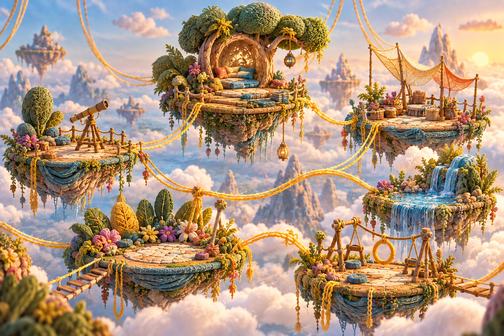
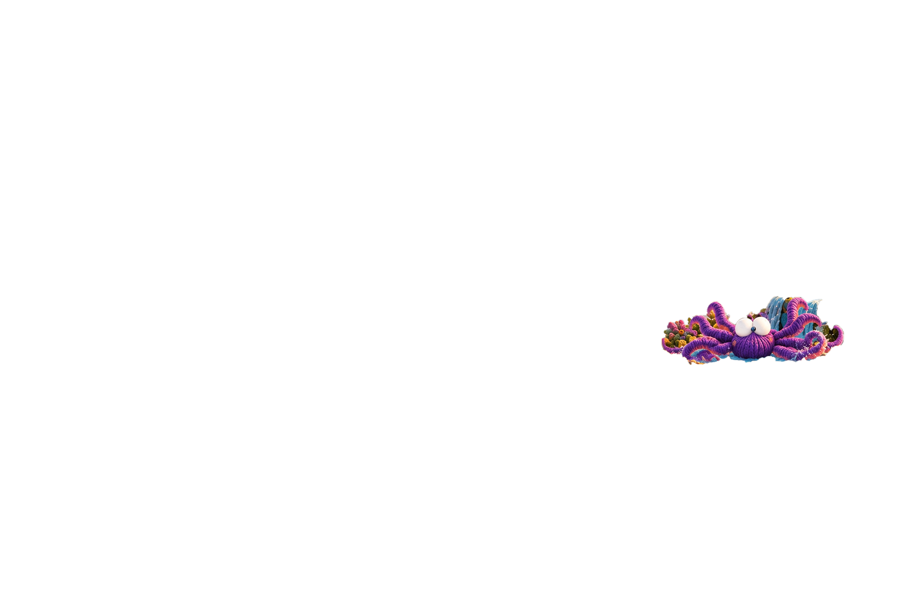
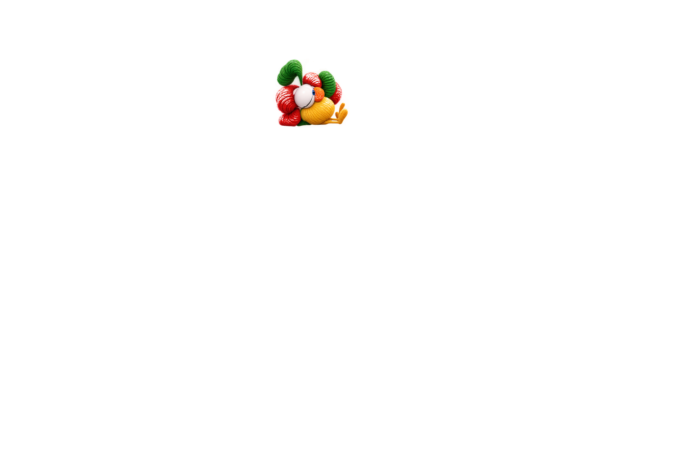
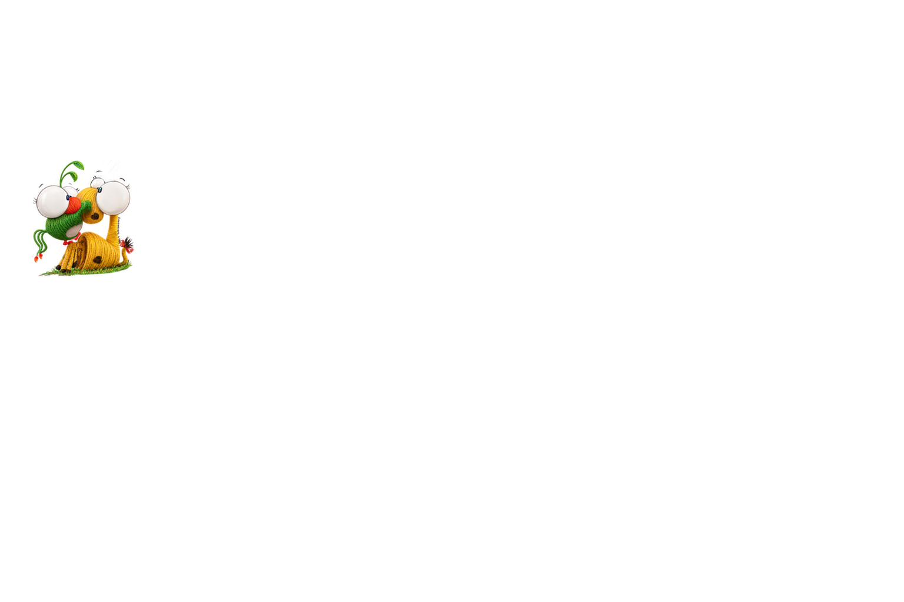

MONOCUCOS · APRENDER MONOCUQUEANDO
Todos tenemos un lugar
Prueba técnica de tarjetas · Toca los símbolos +




Elige un personaje
Selecciona uno de los tres puntos para comprobar la interacción.
Esta es una prueba de interacción y adaptación visual, no la experiencia educativa definitiva. Las ilustraciones no se han modificado.
Lienzo de referencia: 1536 × 1024 · Capas independientes